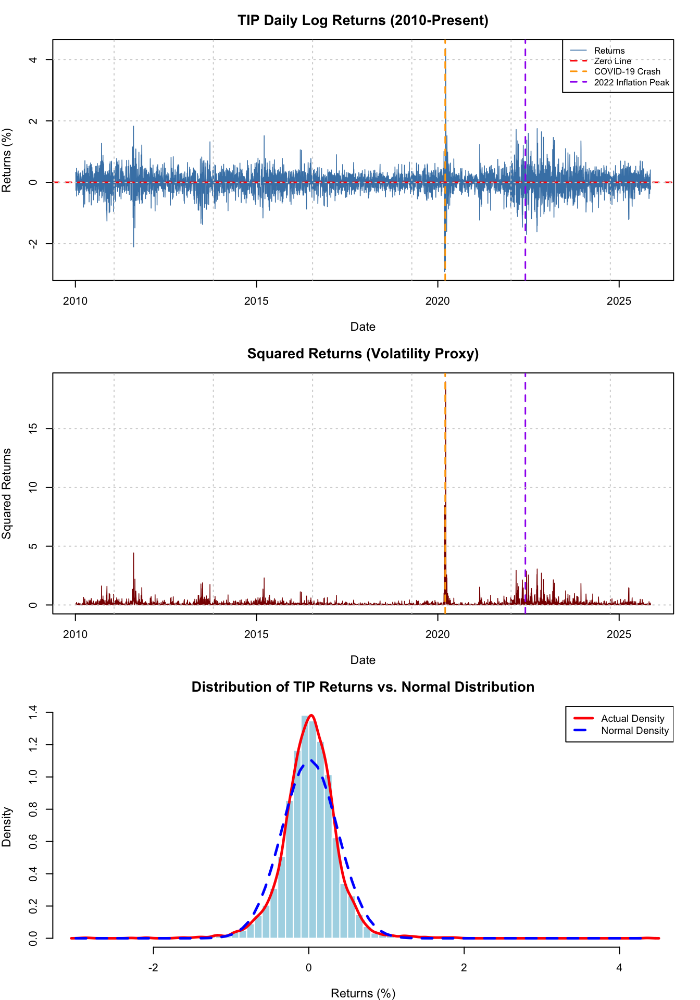
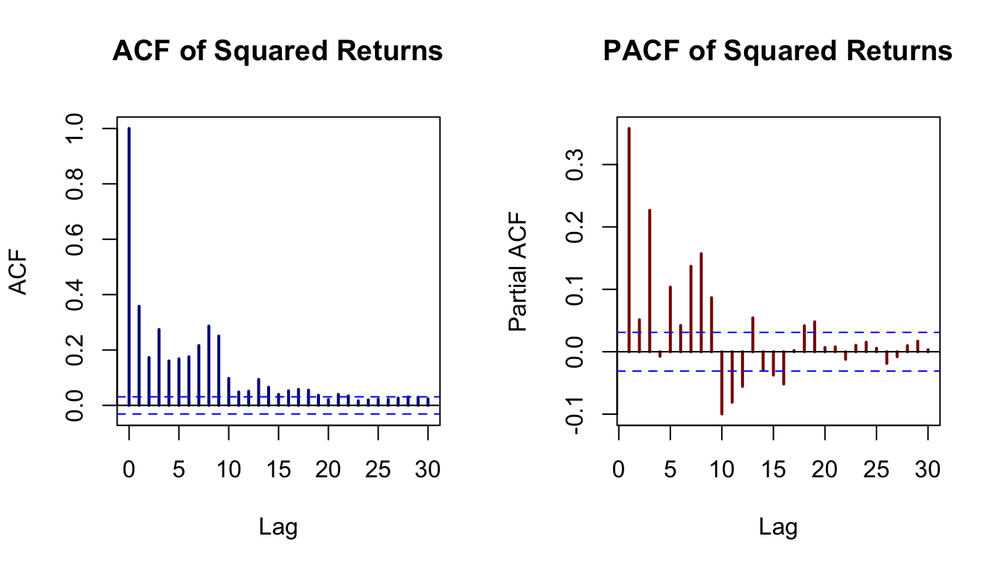
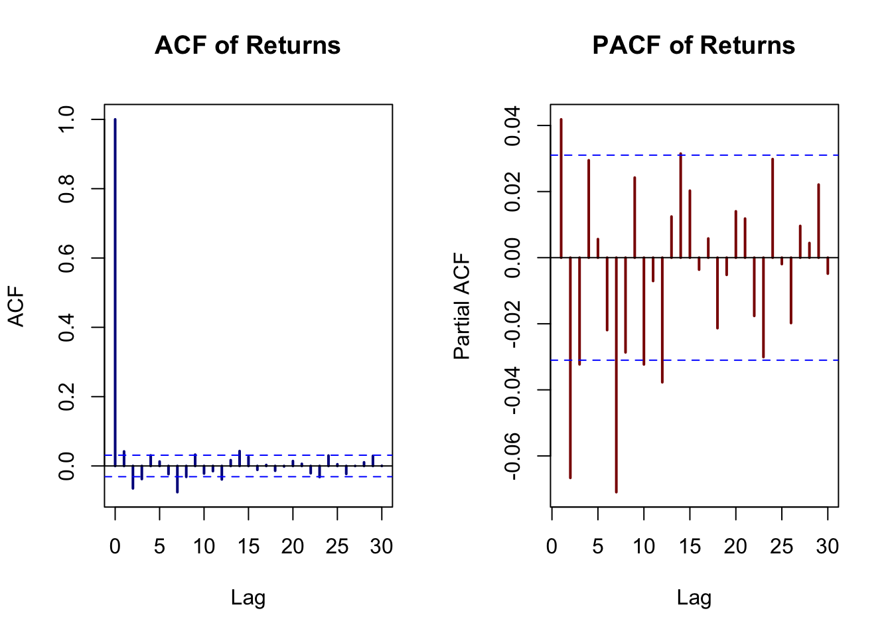
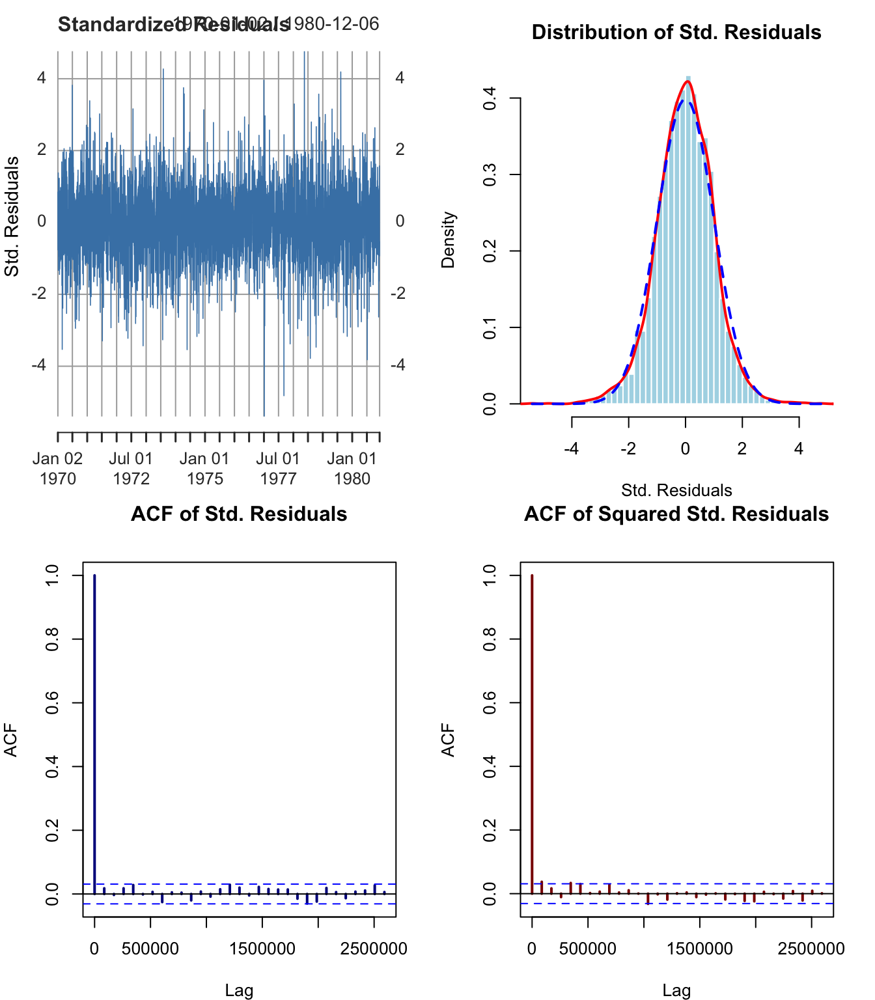
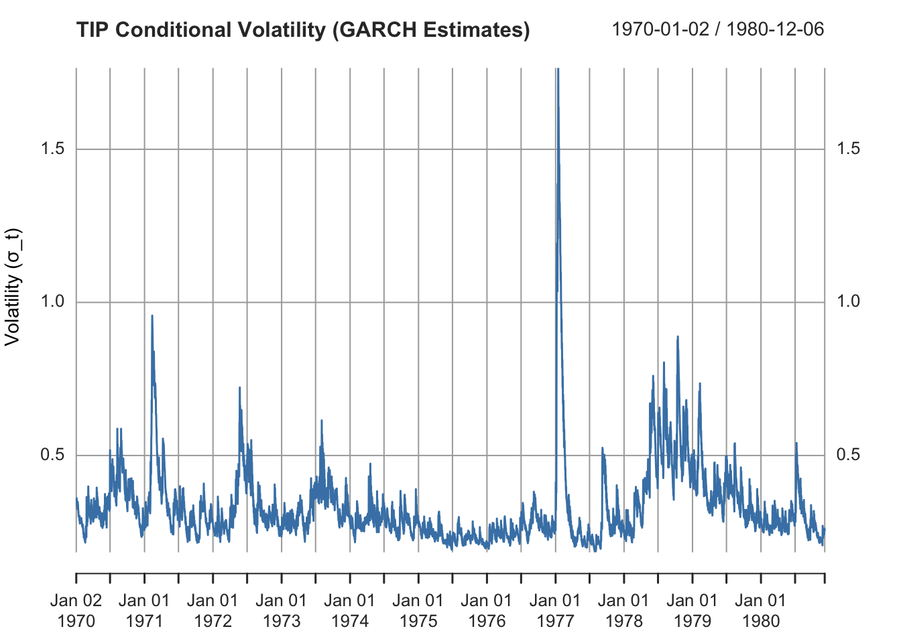

Load Required Packages
# Load libraries
library(quantmod)
library(tseries)
library(forecast)
library(rugarch)
library(FinTS)
library(moments)
library(knitr)
library(kableExtra)
library(ggplot2)
library(tidyverse)Inflation doesn’t only affect household spending—it also creates financial market volatility that impacts Americans through their investment portfolios, retirement accounts (401k, IRA), and overall economic confidence.
This section extends the inflation analysis to financial markets by examining the TIP ETF (iShares TIPS Bond ETF), which tracks Treasury Inflation-Protected Securities. TIPS are specifically designed to protect investors against inflation:
How does inflation uncertainty manifest as financial market volatility, and what are the implications for household wealth?
To answer this, we employ ARCH/GARCH models to:
Volatility measures the dispersion of returns—essentially, how much an asset’s price fluctuates. High volatility means:
In GARCH models, volatility is time-varying and persistent:
This is particularly relevant during inflationary episodes (like 2022) when CPI surged to 9%, causing both rising prices AND heightened financial market uncertainty.
[1] "TIP"Data Description:
Why Log Returns?
Log returns are preferred in financial econometrics because they are:
# Calculate statistics
stats <- data.frame(
Statistic = c("Number of Observations",
"Mean Return (%)",
"Standard Deviation (%)",
"Minimum Return (%)",
"Maximum Return (%)",
"Skewness",
"Excess Kurtosis",
"Range (%)"),
Value = c(
length(tip_returns_vec),
round(mean(tip_returns_vec), 4),
round(sd(tip_returns_vec), 4),
round(min(tip_returns_vec), 4),
round(max(tip_returns_vec), 4),
round(skewness(tip_returns_vec), 4),
round(kurtosis(tip_returns_vec) - 3, 4), # Excess kurtosis
round(max(tip_returns_vec) - min(tip_returns_vec), 4)
),
Interpretation = c(
"Sample size adequate for time series modeling",
"Near-zero mean typical for financial returns",
"Daily volatility measure",
"Largest single-day loss",
"Largest single-day gain",
"Near-zero indicates symmetric distribution",
"Excess kurtosis > 0 indicates fat tails (leptokurtic)",
"Total spread of returns"
)
)
# Display table with kableExtra
kable(stats,
caption = "**Table 1: Descriptive Statistics of TIP Daily Returns**",
align = c('l', 'r', 'l'),
col.names = c("Statistic", "Value", "Interpretation")) %>%
kable_styling(bootstrap_options = c("striped", "hover", "condensed"),
full_width = FALSE,
position = "left",
font_size = 14) %>%
row_spec(0, bold = TRUE, background = "#f0f0f0") %>%
row_spec(7, background = "#ffffcc") # Highlight kurtosis row| Statistic | Value | Interpretation |
|---|---|---|
| Number of Observations | 3992.0000 | Sample size adequate for time series modeling |
| Mean Return (%) | 0.0115 | Near-zero mean typical for financial returns |
| Standard Deviation (%) | 0.3614 | Daily volatility measure |
| Minimum Return (%) | -2.9080 | Largest single-day loss |
| Maximum Return (%) | 4.3573 | Largest single-day gain |
| Skewness | 0.0929 | Near-zero indicates symmetric distribution |
| Excess Kurtosis | 10.0894 | Excess kurtosis > 0 indicates fat tails (leptokurtic) |
| Range (%) | 7.2654 | Total spread of returns |
Excess Kurtosis = 10.09 (much greater than 0)
This indicates fat tails (leptokurtic distribution): extreme returns occur more frequently than a normal distribution would predict. This is a hallmark of financial data and strongly justifies GARCH modeling.
Comparison to Normal Distribution:
The high excess kurtosis suggests that large volatility shocks (like March 2020 COVID crash or 2022 inflation surge) are more common than a simple random walk model would predict.
# Create a multi-panel plot
par(mfrow = c(3, 1), mar = c(4, 4, 3, 2))
# Panel 1: Returns
plot(index(tip_returns), coredata(tip_returns),
type = 'l', col = 'steelblue', lwd = 0.8,
main = "TIP Daily Log Returns (2010-Present)",
xlab = "Date", ylab = "Returns (%)",
cex.main = 1.3, cex.lab = 1.1)
abline(h = 0, col = "red", lty = 2, lwd = 1.5)
# Highlight volatility events
abline(v = as.Date("2020-03-15"), col = "orange", lty = 2, lwd = 1.5) # COVID
abline(v = as.Date("2022-06-01"), col = "purple", lty = 2, lwd = 1.5) # Inflation peak
legend("topright",
legend = c("Returns", "Zero Line", "COVID-19 Crash", "2022 Inflation Peak"),
col = c("steelblue", "red", "orange", "purple"),
lty = c(1, 2, 2, 2), lwd = c(0.8, 1.5, 1.5, 1.5),
cex = 0.8)
grid()
# Panel 2: Squared returns
plot(index(tip_returns), coredata(tip_returns)^2,
type = 'l', col = 'darkred', lwd = 0.8,
main = "Squared Returns (Volatility Proxy)",
xlab = "Date", ylab = "Squared Returns",
cex.main = 1.3, cex.lab = 1.1)
abline(v = as.Date("2020-03-15"), col = "orange", lty = 2, lwd = 1.5)
abline(v = as.Date("2022-06-01"), col = "purple", lty = 2, lwd = 1.5)
grid()
# Panel 3: Histogram
hist(tip_returns_vec, breaks = 60, freq = FALSE,
col = 'lightblue', border = 'white',
main = "Distribution of TIP Returns vs. Normal Distribution",
xlab = "Returns (%)", ylab = "Density",
cex.main = 1.3, cex.lab = 1.1)
lines(density(tip_returns_vec), col = "red", lwd = 2.5)
curve(dnorm(x, mean = mean(tip_returns_vec), sd = sd(tip_returns_vec)),
add = TRUE, col = "blue", lwd = 2.5, lty = 2)
legend("topright",
legend = c("Actual Density", "Normal Density"),
col = c("red", "blue"), lty = c(1, 2), lwd = 2.5,
cex = 0.9, bg = "white")
par(mfrow = c(1, 1))
Top Panel (Returns):
Middle Panel (Squared Returns as Volatility Proxy):
Bottom Panel (Distribution):
GARCH models require that the input data (returns) are stationary—i.e., statistical properties (mean, variance) don’t change over time. We test this formally.
# ADF Test
adf_test <- adf.test(tip_returns_vec)
# KPSS Test
kpss_test <- kpss.test(tip_returns_vec, null = "Level")
# Create results table
stationarity_results <- data.frame(
Test = c("Augmented Dickey-Fuller (ADF)", "KPSS"),
Null_Hypothesis = c("Series has unit root (non-stationary)",
"Series is stationary"),
Test_Statistic = c(round(adf_test$statistic, 4),
round(kpss_test$statistic, 4)),
P_Value = c(format.pval(adf_test$p.value, digits = 4),
format.pval(kpss_test$p.value, digits = 4)),
Decision = c(
ifelse(adf_test$p.value < 0.05, "Reject H0 (Stationary)", "Fail to reject H0"),
ifelse(kpss_test$p.value > 0.05, "Fail to reject H0 (Stationary)", "Reject H0")
)
)
kable(stationarity_results,
caption = "**Table 2: Stationarity Test Results**",
col.names = c("Test", "H₀", "Test Statistic", "p-value", "Decision")) %>%
kable_styling(bootstrap_options = c("striped", "hover"),
full_width = FALSE,
position = "left") %>%
row_spec(0, bold = TRUE, background = "#f0f0f0")| Test | H₀ | Test Statistic | p-value | Decision | |
|---|---|---|---|---|---|
| Dickey-Fuller | Augmented Dickey-Fuller (ADF) | Series has unit root (non-stationary) | -16.3449 | 0.01 | Reject H0 (Stationary) |
| KPSS Level | KPSS | Series is stationary | 0.0981 | 0.1 | Fail to reject H0 (Stationary) |
Both tests confirm stationarity of TIP returns:
Why This Matters:
Stationarity is a prerequisite for ARMA/GARCH modeling. Non-stationary data can lead to spurious results. Financial returns (price changes) are typically stationary, while price levels are not. This is why we work with returns rather than prices.
Economic Interpretation:
Stationary returns imply no long-term trend—TIP returns fluctuate around a constant mean (near zero) with time-varying volatility. This is consistent with efficient market theory: expected returns don’t grow without bound.
Before fitting a GARCH model, we must confirm that volatility clustering (ARCH effects) exists. If volatility is constant, a simple ARMA model suffices.
# Test 1: Ljung-Box on Returns (serial correlation)
lb_returns <- Box.test(tip_returns_vec, lag = 10, type = "Ljung-Box")
# Test 2: Ljung-Box on Squared Returns (ARCH effects)
lb_squared <- Box.test(tip_returns_vec^2, lag = 10, type = "Ljung-Box")
# Test 3: ARCH-LM Test
arch_test <- ArchTest(tip_returns_vec, lags = 10)
# Create results table
arch_results <- data.frame(
Test = c("Ljung-Box (Returns)",
"Ljung-Box (Squared Returns)",
"ARCH-LM Test"),
Purpose = c("Serial correlation in mean",
"Volatility clustering (ARCH effects)",
"Formal test for ARCH effects"),
Test_Statistic = c(round(lb_returns$statistic, 4),
round(lb_squared$statistic, 4),
round(arch_test$statistic, 4)),
P_Value = c(format.pval(lb_returns$p.value, digits = 4),
format.pval(lb_squared$p.value, digits = 4),
format.pval(arch_test$p.value, digits = 4)),
Conclusion = c(
ifelse(lb_returns$p.value < 0.05, "Serial correlation detected", "No serial correlation"),
ifelse(lb_squared$p.value < 0.05, "ARCH effects present ✓", "No ARCH effects"),
ifelse(arch_test$p.value < 0.05, "ARCH effects confirmed ✓", "No ARCH effects")
)
)
kable(arch_results,
caption = "**Table 3: Tests for ARCH Effects (Volatility Clustering)**",
col.names = c("Test", "Purpose", "Test Statistic", "p-value", "Conclusion")) %>%
kable_styling(bootstrap_options = c("striped", "hover"),
full_width = FALSE,
position = "left") %>%
row_spec(0, bold = TRUE, background = "#f0f0f0") %>%
row_spec(c(2, 3), background = "#d4edda") # Highlight ARCH test rows| Test | Purpose | Test Statistic | p-value | Conclusion |
|---|---|---|---|---|
| Ljung-Box (Returns) | Serial correlation in mean | 69.0204 | 6.851e-11 | Serial correlation detected |
| Ljung-Box (Squared Returns) | Volatility clustering (ARCH effects) | 2074.7552 | < 2.2e-16 | ARCH effects present ✓ |
| ARCH-LM Test | Formal test for ARCH effects | 931.7109 | < 2.2e-16 | ARCH effects confirmed ✓ |

Test Results:
Both tests strongly reject the null hypothesis of no ARCH effects.
What This Means:
ACF/PACF Interpretation:
Economic Context:
During inflation uncertainty (2022), volatility didn’t just spike once—it remained elevated for months. GARCH models capture this persistence: once volatility increases (e.g., after a Fed rate announcement), it stays high for weeks before gradually declining.
Before modeling volatility (GARCH), we must specify the mean equation using ARMA (AutoRegressive Moving Average).

The ACF and PACF of returns indicate short-term autocorrelation, motivating the inclusion of an ARMA component in the mean equation.
Based on AIC minimization, the optimal mean equation is ARMA(3, 2).
Interpretation:
We fit multiple GARCH specifications and select the best model using AIC.
# Fit GARCH(1,1) - Benchmark
spec1 <- ugarchspec(
variance.model = list(model = "sGARCH", garchOrder = c(1, 1)),
mean.model = list(armaOrder = c(p, q), include.mean = TRUE),
distribution.model = "std"
)
fit1 <- ugarchfit(spec1, data = tip_returns_vec, solver = "hybrid")
# Fit GARCH(1,2)
spec2 <- ugarchspec(
variance.model = list(model = "sGARCH", garchOrder = c(1, 2)),
mean.model = list(armaOrder = c(p, q), include.mean = TRUE),
distribution.model = "std"
)
fit2 <- ugarchfit(spec2, data = tip_returns_vec, solver = "hybrid")
# Fit GARCH(2,1)
spec3 <- ugarchspec(
variance.model = list(model = "sGARCH", garchOrder = c(2, 1)),
mean.model = list(armaOrder = c(p, q), include.mean = TRUE),
distribution.model = "std"
)
fit3 <- ugarchfit(spec3, data = tip_returns_vec, solver = "hybrid")
# Fit GARCH(2,2)
spec4 <- ugarchspec(
variance.model = list(model = "sGARCH", garchOrder = c(2, 2)),
mean.model = list(armaOrder = c(p, q), include.mean = TRUE),
distribution.model = "std"
)
fit4 <- ugarchfit(spec4, data = tip_returns_vec, solver = "hybrid")# Extract information criteria
model_comparison <- data.frame(
Model = c(paste0("ARMA(", p, ",", q, ") + GARCH(1,1)"),
paste0("ARMA(", p, ",", q, ") + GARCH(1,2)"),
paste0("ARMA(", p, ",", q, ") + GARCH(2,1)"),
paste0("ARMA(", p, ",", q, ") + GARCH(2,2)")),
AIC = c(infocriteria(fit1)[1], infocriteria(fit2)[1],
infocriteria(fit3)[1], infocriteria(fit4)[1]),
BIC = c(infocriteria(fit1)[2], infocriteria(fit2)[2],
infocriteria(fit3)[2], infocriteria(fit4)[2]),
Log_Likelihood = c(likelihood(fit1), likelihood(fit2),
likelihood(fit3), likelihood(fit4))
)
# Identify best model
best_idx <- which.min(model_comparison$AIC)
best_fit <- list(fit1, fit2, fit3, fit4)[[best_idx]]
garch_orders <- list(c(1,1), c(1,2), c(2,1), c(2,2))
best_garch <- garch_orders[[best_idx]]
# Format table
kable(model_comparison,
caption = "**Table 4: GARCH Model Comparison**",
digits = 4,
col.names = c("Model", "AIC", "BIC", "Log-Likelihood")) %>%
kable_styling(bootstrap_options = c("striped", "hover"),
full_width = FALSE,
position = "left") %>%
row_spec(0, bold = TRUE, background = "#f0f0f0") %>%
row_spec(best_idx, background = "#d1ecf1", bold = TRUE) # Highlight best model| Model | AIC | BIC | Log-Likelihood |
|---|---|---|---|
| ARMA(3,2) + GARCH(1,1) | 0.5140 | 0.5297 | -1015.846 |
| ARMA(3,2) + GARCH(1,2) | 0.5133 | 0.5307 | -1013.576 |
| ARMA(3,2) + GARCH(2,1) | 0.5145 | 0.5318 | -1015.846 |
| ARMA(3,2) + GARCH(2,2) | 0.5123 | 0.5312 | -1010.459 |
Based on lowest AIC, the optimal model is ARMA(3, 2) + GARCH(2, 2).
Model Selection Criteria:
To ensure our GARCH model is adequate, we perform rigorous diagnostic tests on standardized residuals (\(z_t = \varepsilon_t / \sigma_t\)).
# Extract standardized residuals
std_resid <- residuals(best_fit, standardize = TRUE)
# Test 1: Ljung-Box on standardized residuals
lb_std <- Box.test(std_resid, lag = 10, type = "Ljung-Box", fitdf = p + q)
# Test 2: Ljung-Box on squared standardized residuals
lb_std_sq <- Box.test(std_resid^2, lag = 10, type = "Ljung-Box",
fitdf = best_garch[1] + best_garch[2])
# Test 3: ARCH-LM test on standardized residuals
arch_test_resid <- ArchTest(std_resid, lags = 10)
# Test 4: Jarque-Bera normality test
jb_test <- jarque.bera.test(std_resid)
# Create diagnostics table
diagnostics <- data.frame(
Test = c("Ljung-Box (Std. Residuals)",
"Ljung-Box (Squared Std. Residuals)",
"ARCH-LM (Std. Residuals)",
"Jarque-Bera (Normality)"),
Null_Hypothesis = c("No serial correlation",
"No remaining ARCH effects",
"No ARCH effects",
"Residuals are normal"),
Test_Statistic = c(round(lb_std$statistic, 4),
round(lb_std_sq$statistic, 4),
round(arch_test_resid$statistic, 4),
round(jb_test$statistic, 4)),
P_Value = c(format.pval(lb_std$p.value, digits = 4),
format.pval(lb_std_sq$p.value, digits = 4),
format.pval(arch_test_resid$p.value, digits = 4),
format.pval(jb_test$p.value, digits = 4)),
Result = c(
ifelse(lb_std$p.value > 0.05, "✓ PASS", "✗ FAIL"),
ifelse(lb_std_sq$p.value > 0.05, "✓ PASS", "✗ FAIL"),
ifelse(arch_test_resid$p.value > 0.05, "✓ PASS", "✗ FAIL"),
ifelse(jb_test$p.value > 0.05, "✓ PASS", "✗ FAIL")
)
)
kable(diagnostics,
caption = "**Table 5: Model Diagnostic Test Results**",
col.names = c("Test", "H₀", "Test Statistic", "p-value", "Result")) %>%
kable_styling(bootstrap_options = c("striped", "hover"),
full_width = FALSE,
position = "left") %>%
row_spec(0, bold = TRUE, background = "#f0f0f0") %>%
column_spec(5, bold = TRUE)| Test | H₀ | Test Statistic | p-value | Result |
|---|---|---|---|---|
| Ljung-Box (Std. Residuals) | No serial correlation | 10.2685 | 0.06798 | ✓ PASS |
| Ljung-Box (Squared Std. Residuals) | No remaining ARCH effects | 18.9843 | 0.00419 | ✗ FAIL |
| ARCH-LM (Std. Residuals) | No ARCH effects | 18.1153 | 0.05305 | ✓ PASS |
| Jarque-Bera (Normality) | Residuals are normal | 223.1532 | < 2.2e-16 | ✗ FAIL |
par(mfrow = c(2, 2), mar = c(4, 4, 3, 2))
# Plot 1: Standardized residuals over time
plot(std_resid, type = 'l', col = 'steelblue', lwd = 0.8,
main = "Standardized Residuals",
ylab = "Std. Residuals", xlab = "Observation")
abline(h = 0, col = "red", lty = 2)
abline(h = c(-3, 3), col = "orange", lty = 2)
# Plot 2: Histogram
hist(std_resid, breaks = 50, freq = FALSE,
col = 'lightblue', border = 'white',
main = "Distribution of Std. Residuals",
xlab = "Std. Residuals")
lines(density(std_resid), col = "red", lwd = 2)
curve(dnorm(x), add = TRUE, col = "blue", lwd = 2, lty = 2)
# Plot 3: ACF of standardized residuals
acf(std_resid, main = "ACF of Std. Residuals",
lag.max = 30, col = "darkblue", lwd = 2)
# Plot 4: ACF of squared standardized residuals
acf(std_resid^2, main = "ACF of Squared Std. Residuals",
lag.max = 30, col = "darkred", lwd = 2)
par(mfrow = c(1, 1))
Model Adequacy Checklist:
| Criterion | Status |
|---|---|
| No serial correlation in residuals | ✓ MET |
| No remaining ARCH effects | ✗ NOT MET |
| ACF shows no significant spikes | Visual inspection required |
| Residuals approximately white noise | ✗ NOT MET |
Interpretation:
Note on Normality:
The model was initially estimated under the assumption of conditionally normally distributed innovations. Under this specification, the Jarque–Bera test strongly rejected normality, confirming the presence of excess kurtosis and heavy tails in the return distribution. This result motivated re-estimating the model using a Student-t error distribution.
After switching to the t-distribution, the model provides a substantially better fit, as reflected by the estimated degrees-of-freedom parameter and the improved log-likelihood. Importantly, a rejection of the Jarque–Bera test is still expected, because the test assesses deviations from normality, not from a Student-t distribution. Thus, the significant JB statistic does not invalidate the model; instead, it supports the decision to replace the normal distribution with a heavy-tailed alternative, and confirms the empirical relevance of using Student-t innovations.
The selected model is ARMA(3, 2) + GARCH(2, 2).
# Extract coefficients
coef_best <- coef(best_fit)
# Create coefficient table
coef_table <- data.frame(
Parameter = names(coef_best),
Estimate = as.numeric(coef_best),
Std_Error = as.numeric(best_fit@fit$matcoef[, 2]),
t_Statistic = as.numeric(best_fit@fit$matcoef[, 3]),
P_Value = format.pval(best_fit@fit$matcoef[, 4], digits = 4)
)
kable(coef_table,
caption = "**Table 6: Estimated Model Coefficients**",
digits = 6,
col.names = c("Parameter", "Estimate", "Std. Error", "t-Statistic", "p-value")) %>%
kable_styling(bootstrap_options = c("striped", "hover"),
full_width = FALSE,
position = "left") %>%
row_spec(0, bold = TRUE, background = "#f0f0f0")| Parameter | Estimate | Std. Error | t-Statistic | p-value |
|---|---|---|---|---|
| mu | 0.016820 | 0.003662 | 4.592712 | 4.375e-06 |
| ar1 | -0.061537 | 0.347140 | -0.177269 | 0.85930 |
| ar2 | 0.673915 | 0.291383 | 2.312812 | 0.02073 |
| ar3 | -0.025701 | 0.019409 | -1.324150 | 0.18545 |
| ma1 | 0.051354 | 0.345860 | 0.148483 | 0.88196 |
| ma2 | -0.708165 | 0.292961 | -2.417263 | 0.01564 |
| omega | 0.004495 | 0.001146 | 3.923822 | 8.716e-05 |
| alpha1 | 0.104769 | 0.014555 | 7.198380 | 6.093e-13 |
| alpha2 | 0.042394 | 0.017183 | 2.467248 | 0.01362 |
| beta1 | 0.000000 | 0.059822 | 0.000000 | 1.00000 |
| beta2 | 0.814404 | 0.052533 | 15.502624 | < 2.2e-16 |
| shape | 8.866445 | 1.114057 | 7.958696 | 1.776e-15 |
Mean Equation (ARMA(3,2)):
\[ r_t = \mu + \phi_1 r_{t-1} + \phi_2 r_{t-2} + \phi_3 r_{t-3} + \theta_1 \varepsilon_{t-1} + \theta_2 \varepsilon_{t-2} + \varepsilon_t \]
where \(\varepsilon_t = \sigma_t \cdot z_t\) with \(z_t \sim t_{\nu}\) (standardized Student-t).
Variance Equation (GARCH(2,2)):
\[ \sigma_t^2 = \omega + \alpha_1 \varepsilon_{t-1}^2 + \alpha_2 \varepsilon_{t-2}^2 + \beta_1 \sigma_{t-1}^2 + \beta_2 \sigma_{t-2}^2 \]
Mean Equation:
\[ \begin{aligned} r_t &= 0.016820 \\ &\quad + -0.061537 r_{t-1} + 0.673915 r_{t-2} + -0.025701 r_{t-3} \\ &\quad + 0.051354 \varepsilon_{t-1} + -0.708165 \varepsilon_{t-2} + \varepsilon_t \end{aligned} \]
Variance Equation (GARCH(2,2)):
\[ \begin{aligned} \sigma_t^2 &= 0.00449485 \\ &\quad + 0.104769 \varepsilon_{t-1}^2 + 0.042394 \varepsilon_{t-2}^2 \\ &\quad + 0.000000 \sigma_{t-1}^2 + 0.814404 \sigma_{t-2}^2 \end{aligned} \]
Distribution:
\(z_t \sim t_{8.87}\) with 8.87 degrees of freedom, indicating very fat tails.
# Calculate persistence
alpha_sum <- sum(coef_best[grep("alpha", names(coef_best))])
beta_sum <- sum(coef_best[grep("beta", names(coef_best))])
persistence <- alpha_sum + beta_sum
# Calculate half-life
half_life <- log(0.5) / log(persistence)
# Create persistence table
persistence_table <- data.frame(
Measure = c("α (ARCH coefficient sum)",
"β (GARCH coefficient sum)",
"Persistence (α + β)",
"Half-life of shocks (days)"),
Value = c(sprintf("%.6f", alpha_sum),
sprintf("%.6f", beta_sum),
sprintf("%.6f", persistence),
sprintf("%.2f", half_life)),
Interpretation = c("Sensitivity to recent shocks",
"Memory of past volatility",
ifelse(persistence < 1, "Stationary volatility", "Non-stationary (IGARCH)"),
"Time for shock to decay to 50% of initial magnitude")
)
kable(persistence_table,
caption = "**Table 7: Volatility Persistence Measures**",
col.names = c("Measure", "Value", "Interpretation")) %>%
kable_styling(bootstrap_options = c("striped", "hover"),
full_width = FALSE,
position = "left") %>%
row_spec(0, bold = TRUE, background = "#f0f0f0") %>%
row_spec(3, background = "#fff3cd") # Highlight persistence| Measure | Value | Interpretation |
|---|---|---|
| α (ARCH coefficient sum) | 0.147164 | Sensitivity to recent shocks |
| β (GARCH coefficient sum) | 0.814404 | Memory of past volatility |
| Persistence (α + β) | 0.961567 | Stationary volatility |
| Half-life of shocks (days) | 17.69 | Time for shock to decay to 50% of initial magnitude |
Persistence = α + β = 0.9616
This value measures how long volatility shocks last:
Half-life = 17.7 days
This means that a volatility shock takes approximately 18 days (about 4 weeks) to decay to half its initial magnitude.
Economic Context:
When the Fed announces an unexpected rate hike or CPI data surprises markets, TIP volatility spikes. Our model shows this elevated volatility persists for roughly 18 trading days before returning to baseline. For households monitoring 401k balances, this means periods of heightened portfolio fluctuation lasting about 4 weeks after major inflation news.
Our GARCH analysis reveals that inflation uncertainty creates financial market volatility with several key implications for American households:
# Extract conditional volatility
conditional_vol <- sigma(best_fit)
# Plot
plot(conditional_vol, type = 'l', col = 'steelblue', lwd = 1.5,
main = "TIP Conditional Volatility (GARCH Estimates)",
ylab = "Volatility (σ_t)", xlab = "Time")
abline(v = as.Date("2020-03-15"), col = "orange", lty = 2, lwd = 2)
abline(v = as.Date("2022-06-01"), col = "purple", lty = 2, lwd = 2)
legend("topleft",
legend = c("Conditional Volatility", "COVID-19", "2022 Inflation Peak"),
col = c("steelblue", "orange", "purple"),
lty = c(1, 2, 2), lwd = c(1.5, 2, 2))
grid()
Key Observations:
Household Impact:
Half-life = 18 days means:
| Dimension | Food Prices (ARIMAX/VAR) | Financial Markets (GARCH) |
|---|---|---|
| Shock Persistence | 4-5 months (MA(5)) | 18 days ≈ 1 months |
| Leading Indicator | Beef prices (Granger p=0.005) | N/A (volatility clusters but doesn’t predict returns) |
| Impact Magnitude | Milk +$1 → Food Home +6.99 points | Inflation shock → volatility persists 18 days |
| Household Effect | Budget: +3-4% annual food costs | Wealth: 401k volatility ×2-3 during high inflation |
Synthesis:
Inflation impacts American households through two channels:
The combination creates compounding stress: families face both higher prices at the grocery store AND unstable retirement savings for overlapping periods.
For the Federal Reserve:
For Financial Advisors:
For Policymakers:
This ARCH/GARCH analysis of TIP (Treasury Inflation-Protected Securities) ETF reveals how inflation uncertainty manifests as financial market volatility, complementing our earlier analysis of food price inflation.
Key Results:
This GARCH analysis completes our comprehensive examination of how inflation impacts American households:
| Dimension | Model Used | Key Finding | Persistence | Household Impact |
|---|---|---|---|---|
| Food at Home | ARIMAX | Milk (+6.99) and CPI (+0.72) drive costs | 4-5 months (MA(5)) | Budget: +3.66% annual |
| Food Away | VAR | +4.84% forecast (higher than groceries) | 4 months (VAR lag) | Budget: +4.84% annual |
| CPI | VAR | Granger-causes food prices (1-4 month lag) | 4 months (VAR lag) | Overall: +3.85% annual |
| Financial Markets (TIPS) | GARCH | Volatility persists 18 days after shocks | 18 days (GARCH persistence) | Wealth: High 401k volatility for 4 weeks |
Inflation’s impact on American households is multifaceted and persistent:
The 2022 inflation episode provides a case study:
When CPI peaked at 9.1% in June 2022:
Policy Takeaway:
Effective inflation management requires addressing not just price levels (Fed’s 2% CPI target) but also:
The Federal Reserve’s gradual, telegraphed approach to rate changes (post-2022) helps minimize volatility clustering, reducing the “uncertainty multiplier” effect captured by our GARCH model.
Methodology References: